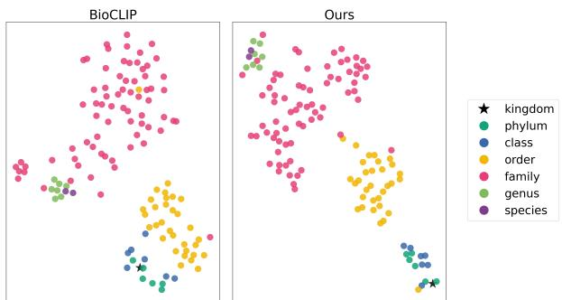

Figureure 1 · Level-restricted contrastive learningFigure 1. Level-restricted contrastive learning. For each image, we construct taxonomic text labels at all hierarchical levels and encode images and texts using CLIP encoders. Instead of comparing text labels from all levels jointly, we constrain the contrastive comparison to be within the same level. This removes cross-level false negatives and enables balanced supervision across hierarchy levels这张图/表用于判断 Beyond Flat Labels 的实验收益来自哪里。重点看替换、消融或跨模型设置下趋势是否一致，而不是只看单个最高分。

Figureure 2 · t-SNE visualization of text embeddingsFigure 2. t-SNE visualization of text embeddings. Our method shows a clearer hierarchical structure and reduced cross-level mixing compared with BioCLIP.这张可视化用来解释 Beyond Flat Labels 学到的中间表征或对齐关系。重点看它是否支持正文里的机制判断。